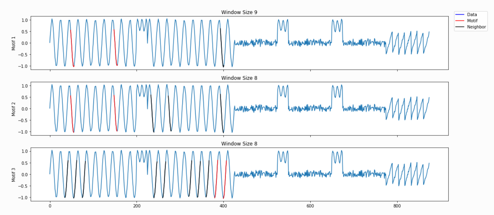
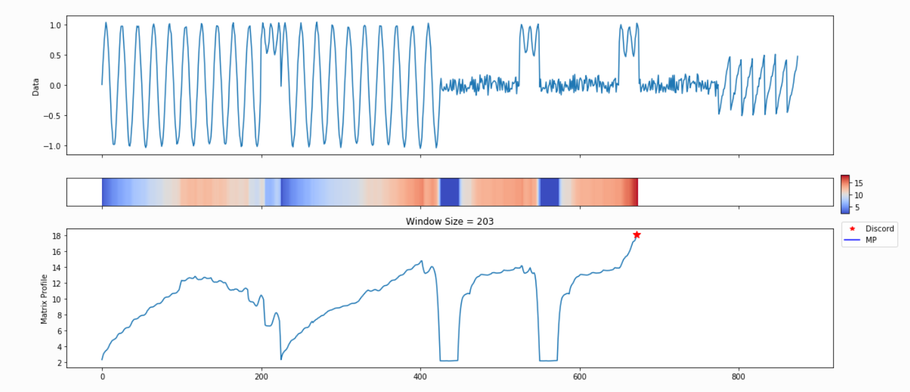
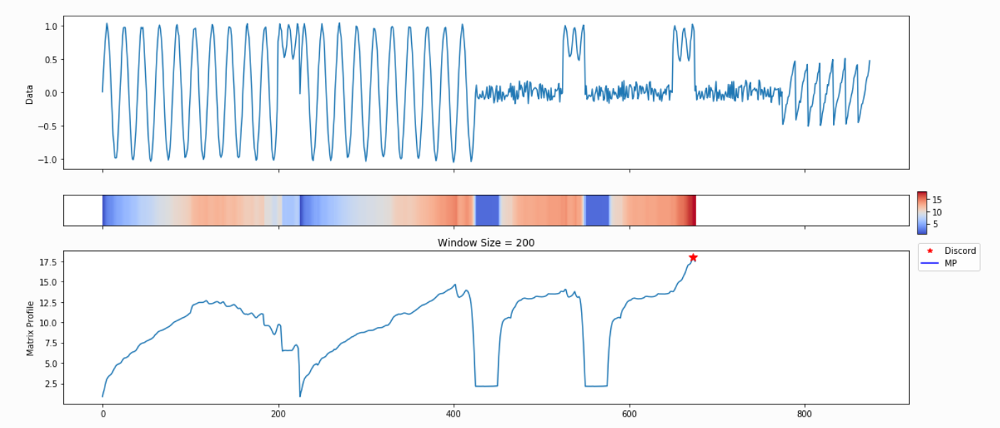
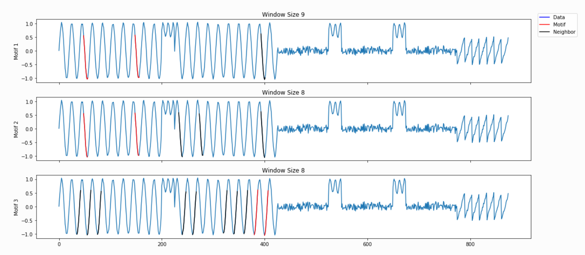
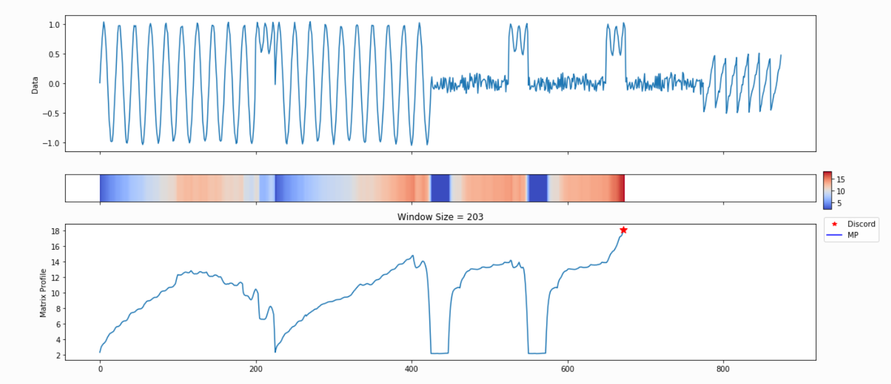
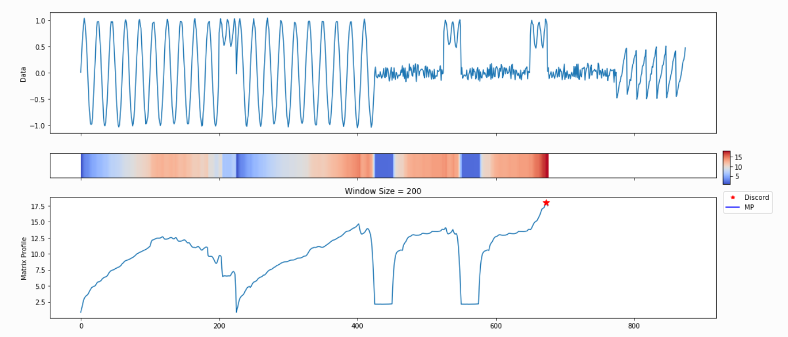

How To Painlessly Analyze Your Time Series
An introduction to MPA: the Matrix Profile API
By Andrew Van Benschoten Feb 29, 2020
We’re surrounded by time series data. From finance to IoT to marketing, many organizations produce thousands of these metrics and mine them to uncover business-critical insights. A Site Reliability Engineer might monitor hundreds of thousands of time series streams from a server farm, in the hopes of detecting anomalous events and preventing catastrophic failure. Alternatively, a brick and mortar retailer might care about identifying patterns of customer foot traffic and leveraging them to guide inventory decisions.
Identifying anomalous events (or “discords”) and repeated patterns (“motifs”) are two fundamental time series tasks. But how does one get started? There are dozens of approaches to both questions, each with unique positives and drawbacks.
Furthermore, time series data is notoriously hard to analyze, and the explosive growth of the data science community has led to a need for more “black-box” automated solutions that can be leveraged by developers with a wide range of technical backgrounds.

We at the Matrix Profile Foundation believe there’s an easy answer. While it’s true that there’s no such thing as a free lunch, the Matrix Profile (a data structure & set of associated algorithms developed by the Keogh research group at UC-Riverside) is a powerful tool to help solve this dual problem of anomaly detection and motif discovery. Matrix Profile is robust, scalable, and largely parameter-free: we’ve seen it work for a wide range of metrics including website user data, order volume and other business-critical applications.
As we will detail below, the Matrix Profile Foundation has implemented the Matrix Profile across three of the most common data science languages (Python, R and Golang) as an easy-to-use API that’s relevant for time series novices and experts alike.
So what is the Matrix Profile?
The basics of Matrix Profile are simple: If I take a snippet of my data and slide it along the rest of the time series, how well does it overlap at each new position? More specifically, we can evaluate the Euclidean distance between a subsequence and every possible time series segment of the same length, building up what’s known as the snippet’s “Distance Profile.”
If the subsequence repeats itself in the data, there will be at least one perfect match and the minimum Euclidean distance will be zero (or close to zero in the presence of noise). In contrast, if the subsequence is highly unique (say it contains a significant outlier), matches will be poor and all overlap scores will be high. Note that the type of data is irrelevant: We’re only looking at general pattern conservation.
We then slide every possible snippet across the time series, building up a collection of Distance Profiles. By taking the minimum value for each time step across all distance profiles, we can build the final Matrix Profile. Notice that both ends of the Matrix Profile value spectrum are useful. High values indicate uncommon patterns or anomalous events; in contrast, low values highlight repeatable motifs and provide valuable insight into your time series of interest.

For those interested, this post by one of our co-founders provides a more in-depth discussion of the Matrix Profile.
Although the Matrix Profile can be a game-changer for time series analysis, leveraging it to produce insights is a multi-step computational process, where each step requires some level of domain experience. However, we believe that the most powerful breakthroughs in data science occur when the complex is made accessible. When it comes to the Matrix Profile, there are three facets to accessibility: “out-of-the-box” working implementations, gentle introductions to core concepts that can naturally lead into deeper exploration, and multi-language accessibility.
Today, we’re proud to unveil the Matrix Profile API (MPA), a common codebase written in R, Python and Golang that achieves all three of these goals.
MPA: how it works
Using the Matrix Profile consists of three steps.
First, you Compute the Matrix Profile itself. However, this is not the end: you need to Discover something by leveraging the Matrix Profile that you’ve created. Do you want to find repeated patterns? Or perhaps uncover anomalous events? Finally, it’s critical that you Visualize your findings, as time series analysis greatly benefits from some level of visual inspection.
Normally, you’d need to read through pages of documentation (both academic and technical) to figure out how to execute each of these three steps. This may not be a challenge if you’re an expert with prior knowledge of the Matrix Profile, but we’ve seen that many users simply want to Analyze their data by breaking through the methodology to get to a basic starting point. Can the code simply leverage some reasonable defaults to produce a reasonable output?
To parallel this natural computational flow, MPA consists of three core components:
- Compute (computing the Matrix Profile)
- Discover (evaluate the MP for motifs, discords, etc)
- Visualize (display results through basic plots)
As Matrix Profile is only a few years old, we anticipate continued development and plan to update this library accordingly; we gladly welcome both community feedback and development assistance! We also desire to educate the data science community about this technique through a growing collection of Jupyter Notebook tutorials. Open-source tools form the backbone of modern analytics, and we hope this implementation serves other users as effectively as it has served us.
These three capabilities are wrapped up into a high-level capability called Analyze. This is a user-friendly interface that enables people who know nothing about the inner workings of Matrix Profile to quickly leverage it for their own data. And as users gain more experience and intuition with MPA, they can easily dive deeper into any of the three core components to make further functional gains.
MPA: a toy example
As an example, we’ll use the Python flavor of MPA to analyze the synthetic time series shown below:

Visual inspection reveals that there are both patterns and discords present. However, one immediate problem is that your choice of subsequence length will change both the number and location of your motifs! Are there only two sinusoidal motifs present between indices 0–500, or is each cycle an instance of the pattern? Let’s see how MPA handles this challenge:
Because we haven’t specified any information regarding our subsequence length, `analyze` begins by leveraging a powerful calculation known as the pan-matrix profile (or PMP) to generate insights that will help us evaluate different subsequence lengths. We’ll discuss the details of PMP in a later post (or you can read the associated paper), but in a nutshell, it is a global calculation of all possible subsequence lengths condensed into a single visual summary. The X-axis is the index of the matrix profile, and the Y-axis is the corresponding subsequence length. The darker the shade, the lower the Euclidean distance at that point. We can use the “peaks” of the triangles to find the 6 “big” motifs visually present in the synthetic time series.
The PMP is all well and good, but we promised a simple way of understanding your time series. To facilitate this, `analyze` will combine PMP with an under the hood algorithm to choose sensible motifs and discords from across all possible window sizes. The additional graphs created by `analyze` show the top three motifs and top three discords, along with the corresponding window size and position within the Matrix Profile (and, by extension, your time series).
 






Not surprisingly, this is a lot of information coming out of the default setting. Our goal is that this core function call can serve as a jumping-off point for many of your future analyses. For example, the PMP indicates that there is a conserved motif of length ~175 within our time series. Try calling `analyze` on that subsequence length and see what happens!
Wrapping Up
We hope that MPA enables you to more painlessly analyze your time series! For further information, visit our website, GitHub repos , or follow us on Twitter. Please star our GitHub repos if you find the code useful! MPF also operates a Discord channel where you can engage with fellow users of the Matrix Profile and ask questions. Happy time series hunting!
Acknowledgements
Thank you to Tyler Marrs, Frankie Cancino, Francisco Bischoff, Austin Ouyang and Jack Green for reviewing this article and assisting in its creation. And above all, thank you to Eamonn Keogh, Abdullah Mueen and their numerous graduate students for creating the Matrix Profile and continuing to drive its development.
Supplemental
- Matrix Profile research papers can be found on Eamonn Keogh’s UCR web page: https://www.cs.ucr.edu/~eamonn/MatrixProfile.html
- The Python implementation of Matrix Profile algorithms can be found here: https://github.com/matrix-profile-foundation/matrixprofile
- The R implementation of Matrix Profile algorithms can be found here: https://github.com/matrix-profile-foundation/tsmp
- The Golang implementation of Matrix Profile algorithms can be found here: https://github.com/matrix-profile-foundation/go-matrixprofile